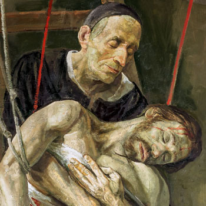

Misionari, pastiri i mistici (Pojedinačna proglašenja)
Svećenik
Sv. Josip Pignatelli
1737. – 1811.
U vrijeme protjerivanja i ukinuća Družbe pomagao je raspršenim isusovcima pronaći smještaj i sačuvati zajedništvo. Njegova skrb za subraću pripravila je obnovu reda, koju sam nije doživio u cijeloj Crkvi.

Izvor slike
- Spomendan
- 14. studenoga
- Zaštitništvo
- Nije navedeno u izvoru
- Životni vijek
- 1737. – 1811.
- Djelovanje
- Svakodnevni rad i skrovita služba · Progoni i progonstvo
- Razdoblje
- 18., 19. stoljeće
- Datum rođenja
- 27.12.1737.
- Mjesto rođenja
- Zaragoza, Španjolska
- Datum smrti
- 15.09.1811.
- Mjesto smrti/mučeništva
- Rim, Italija
- Okolnosti smrti/mučeništva
- Umro mirno nakon dugotrajne službe raspršenim isusovcima.
- Uloga
- Svećenik
- Mučenik
- Ne
- Ostale oznake
- Obnovitelj Družbe Isusove; poglavar za vrijeme ukinuća reda
- Pripadnost
- Isusovac
- Drugi oblici imena
- Joseph Pignatelli · Joseph · José María Pignatelli · Jose Maria Pignatelli
Životopis
Josip Pignatelli veći je dio svećeničkoga života proveo među isusovcima koji su izgubili svoje kuće, škole i redovničku sigurnost. Nakon protjerivanja iz Španjolske, a zatim i ukinuća Družbe Isusove, pomagao je subraći pronaći smještaj, uzdržavanje i mogućnost zajedničkoga života. U starijoj je dobi sudjelovao u prvim koracima obnove Družbe. Njezinu opću obnovu nije doživio: umro je 1811., tri godine prije nego što ju je papa Pio VII. ponovno uspostavio u cijeloj Crkvi. Njegov je doprinos bio u ljudima koje je sačuvao povezanima i pripravio za nastavak isusovačkoga poslanja.
Rođen je 27. prosinca 1737. u Zaragozi, u Španjolskoj, u plemićkoj obitelji napuljskoga podrijetla. Školovao se u tamošnjem isusovačkom kolegiju zajedno s bratom Nicolásom. U mladosti mu je zdravlje bilo narušeno, a bolest će ga pratiti i u kasnijim godinama. Za redovnički se život odlučio unatoč protivljenju obitelji. Dana 8. svibnja 1753. ušao je u novicijat Družbe Isusove u Tarragoni. Započeo je pripravu koja je uključivala duhovnu izobrazbu, studij i poučavanje.
Nakon završetka studija zaređen je za svećenika 1762. Radio je kao nastavnik u kolegiju u Zaragozi, poučavajući gramatiku. Uz školsku je službu posjećivao zatvorenike i osuđenike na smrt. Takva ga je pastoralna služba vodila ljudima koji su bili odvojeni od obitelji i čekali presudu ili njezino izvršenje. Poučavanje i pomoć ugroženima ostali su važni i kada je poslije morao preuzeti odgovornost za velik broj protjeranih redovnika.
U Zaragozi je 1766. sudjelovao u smirivanju nemira izazvanih prijetnjom gladi. Mnoštvo je za nastalu nevolju okrivljavalo guvernera, a prijetilo je i nasilje nad njegovom palačom. Josip je pomogao odvratiti ljude od paljenja zgrade. Unatoč tomu, isusovci su optuživani za poticanje nemira. Njihov položaj u Španjolskoj sve se više pogoršavao. Godine 1767. kraljevska je vlast naredila protjerivanje Družbe iz zemlje, što je Josipu i mnogoj njegovoj subraći trajno promijenilo život.
Njemu i bratu Nicolásu ponuđena je mogućnost ostanka pod uvjetom da napuste Družbu. Obojica su to odbila i otišla sa subraćom. Josip se tako odrekao zaštite koju mu je moglo pružiti plemićko podrijetlo. Na put je krenuo narušena zdravlja, zajedno sa svećenicima i mladim isusovcima koji su još bili u izobrazbi. Njihova se budućnost nije mogla svesti na jedno preseljenje: slijedit će godine traženja dopuštenja, novih utočišta i načina uzdržavanja.
Protjerani isusovci nisu se mogli iskrcati u Civitavecchiji pa su utočište potražili na Korzici. Josip je ondje pomagao skrbiti se za približno šest stotina svećenika i bogoslova. Organizirao je nabavu potrebnih sredstava, smještaj i nastavak studija. Njegova sestra, vojvotkinja od Acerre, pomagala je novcem i namirnicama. Nastojalo se očuvati i zajedničku molitvu te redovničke običaje. U okolnostima progonstva to je značilo da se, uz hranu i krov nad glavom, čuva i ono zbog čega su ti ljudi prvotno došli u Družbu.
Nakon promjene vlasti na Korzici isusovci su ponovno morali tražiti utočište u Italiji. Put ih je vodio preko Genove prema Ferrari. Ondje je Josip pomagao i redovnicima svoje pokrajine i onima koji su se morali vratiti iz misija. Nova je kušnja nastupila 1773., kada je papa Klement XIV. ukinuo Družbu Isusovu. Zajednice su raspuštene, a redovnici su izgubili pravni okvir svojega dotadašnjeg života. Josip se s bratom sklonio u Bolognu.
U Bologni je živio povučenije, posvetivši se studiju i prikupljanju knjiga i rukopisa o povijesti Družbe. Nastavio je održavati vezu sa subraćom. Godine koje su slijedile ukinuće tražile su pomoć starijim i bolesnim isusovcima, ali i očuvanje znanja i iskustva njihove zajednice. Njegova se odgovornost postupno usmjeravala i prema mogućnosti da redovnički život jednom bude ponovno dopušten.
Družba se održala na području Ruskoga Carstva, gdje papinski dokument o ukinuću nije bio proglašen. Preživjeli isusovci u drugim zemljama pokušavali su uspostaviti vezu s tom zajednicom. Josip je razmatrao odlazak u Rusiju, ali ga nije ostvario. Mogućnost sudjelovanja u obnovljenom isusovačkom životu otvorila mu se bliže, u Parmi. Ondje se 1793. pridružio zajednici povezanoj s isusovcima koji su nastavili djelovati u Rusiji. Dana 6. srpnja 1797. obnovio je redovničke zavjete.
Godine 1799. postao je učitelj novaka u Colornu. Nakon dugih godina brige za prognanike sada je mogao pripravljati mlade ljude za Družbu. Njegova je služba povezivala iskustvo starijih isusovaca s izobrazbom novoga naraštaja. Trebalo je prenositi molitveni i zajednički život, poučavati i razlučivati zvanja u okolnostima u kojima obnova još nije bila opća. Josip je u toj pripravi sudjelovao i osobnim primjerom svećenika koji je desetljećima ustrajao u pozivu bez vanjske sigurnosti.
Za provincijala isusovaca u Italiji imenovan je 1803. Sljedeće je godine papa Pio VII. dopustio obnovu Družbe u Kraljevstvu Dviju Sicilija. Josip je sudjelovao u ponovnom okupljanju subraće i razvoju njihovih kuća i škola. Utemeljio je kolegije u Rimu, Tivoliju i Orvietu, a isusovci su pozivani i u druge gradove. Mnogi su bivši isusovci u međuvremenu preuzeli druge crkvene službe, pa povratak nije svima bio jednako moguć. Obnova je napredovala postupno, uz pregovore s crkvenim i državnim vlastima te novu pripravu ljudi sposobnih nastaviti prekinuti rad.
Posljednje je godine proveo u vremenu novih ratova i francuske vlasti u Italiji. Rim je bio okupiran, a papa Pio VII. odveden iz grada. Josip je nastojao sačuvati zajednice koje su tek ponovno počele živjeti. Nije mogao računati na trajnu političku zaštitu. I u tim je prilikama nastavio služiti subraći molitvom, radom i brigom za potrebite. Njegovo vodstvo raslo je iz dugoga iskustva preseljenja, oskudice i različitih ograničenja crkvenoga života.
Umro je u Rimu 15. studenoga 1811. Nije dočekao 7. kolovoza 1814., kada je papa Pio VII. proširio obnovu Družbe na cijelu Crkvu. Iza njega su, međutim, ostale zajednice i novaci koji su mogli sudjelovati u tom nastavku. Njegova je životna zadaća bila povezati isusovce prije ukinuća s onima koji će živjeti i djelovati nakon obnove. Posmrtni mu ostatci počivaju u rimskoj crkvi Il Gesù.
Papa Pio XI. proglasio ga je blaženim 21. svibnja 1933., a papa Pio XII. svetim 12. lipnja 1954. U isusovačkom se kalendaru spominje 14. studenoga. U Družbi je ostao upamćen kao jedan od najvažnijih ljudi njezine obnove: svećenik koji je u vremenu rasapa skrbio za subraću, čuvao zajednički život i pripravljao mlade za poslanje kojemu je pripadao od svoje mladosti.
Pročitaj više na izvornoj stranici ↗